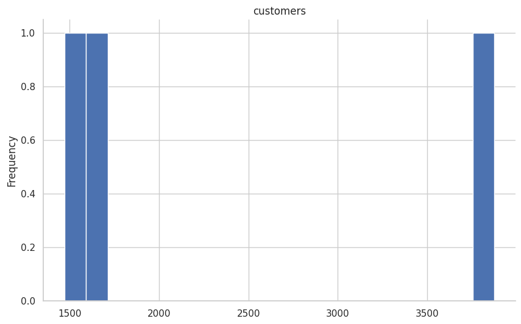

Ramatu Sulemana
Data Analyst | SQL | Python | Business Intelligence
Transforming complex data into clear insights that drive smarter business decisions,
reduce revenue risk, and improve customer retention.
About Me
I am a detail-oriented Data Analyst with hands-on experience delivering real-world
customer analytics and revenue risk insights. I specialize in data cleaning,
exploratory analysis, SQL querying, and communicating findings in a way that
supports executive decision-making.
Technical Skills
- Python (Pandas, NumPy)
- SQL (SQLite)
- Exploratory Data Analysis
- Customer Churn Analysis
- Data Visualization
- Business Reporting
- Git & GitHub
- Data Storytelling
Featured Project
Customer Churn & Revenue Risk Analysis
A real-world analytical project focused on identifying churn drivers,
estimating revenue at risk, and producing actionable recommendations
for business stakeholders.
